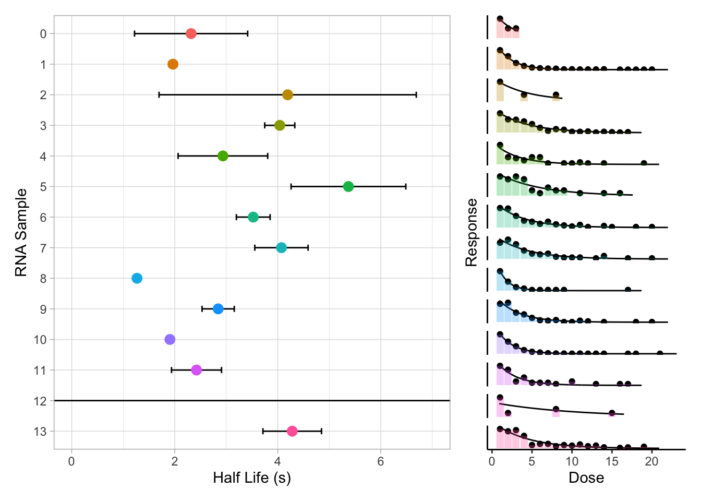

Last updated: 2021-10-06
Checks: 6 1
Knit directory: smfret/
This reproducible R Markdown analysis was created with workflowr (version 1.6.2). The Checks tab describes the reproducibility checks that were applied when the results were created. The Past versions tab lists the development history.
The R Markdown file has unstaged changes. To know which version of the R Markdown file created these results, you’ll want to first commit it to the Git repo. If you’re still working on the analysis, you can ignore this warning. When you’re finished, you can run wflow_publish to commit the R Markdown file and build the HTML.
Great job! The global environment was empty. Objects defined in the global environment can affect the analysis in your R Markdown file in unknown ways. For reproduciblity it’s best to always run the code in an empty environment.
The command set.seed(20210916) was run prior to running the code in the R Markdown file. Setting a seed ensures that any results that rely on randomness, e.g. subsampling or permutations, are reproducible.
Great job! Recording the operating system, R version, and package versions is critical for reproducibility.
Nice! There were no cached chunks for this analysis, so you can be confident that you successfully produced the results during this run.
Great job! Using relative paths to the files within your workflowr project makes it easier to run your code on other machines.
Great! You are using Git for version control. Tracking code development and connecting the code version to the results is critical for reproducibility.
The results in this page were generated with repository version c92520b. See the Past versions tab to see a history of the changes made to the R Markdown and HTML files.
Note that you need to be careful to ensure that all relevant files for the analysis have been committed to Git prior to generating the results (you can use wflow_publish or wflow_git_commit). workflowr only checks the R Markdown file, but you know if there are other scripts or data files that it depends on. Below is the status of the Git repository when the results were generated:
Ignored files:
Ignored: .Rhistory
Ignored: .Rproj.user/
Ignored: data/smfret-data
Untracked files:
Untracked: analysis/fret-distributions.Rmd
Untracked: spr-rates.R
Unstaged changes:
Modified: analysis/_site.yml
Modified: analysis/differential-fitting.Rmd
Modified: analysis/formatting_data.Rmd
Modified: analysis/index.Rmd
Modified: analysis/spr-modelling.Rmd
Note that any generated files, e.g. HTML, png, CSS, etc., are not included in this status report because it is ok for generated content to have uncommitted changes.
These are the previous versions of the repository in which changes were made to the R Markdown (analysis/formatting_data.Rmd) and HTML (docs/formatting_data.html) files. If you’ve configured a remote Git repository (see ?wflow_git_remote), click on the hyperlinks in the table below to view the files as they were in that past version.
| File | Version | Author | Date | Message |
|---|---|---|---|---|
| Rmd | 50f2d31 | bradyajohnston | 2021-10-03 | did some SPR modelling for decay curves |
| Rmd | e3e330f | bradyajohnston | 2021-10-01 | added rmarkdown app for changing cutoffs |
| html | e3e330f | bradyajohnston | 2021-10-01 | added rmarkdown app for changing cutoffs |
| Rmd | 6346059 | bradyajohnston | 2021-09-30 | created the formatting_data.Rmd |
| html | 6346059 | bradyajohnston | 2021-09-30 | created the formatting_data.Rmd |
The traces for the individual traces are in the following:
paths <- c(
"0" = "data/smfret-data/RNA0/rename_path",
"1" = "data/smfret-data/RNA1_target",
"2" = "data/smfret-data/RNA2",
"3" = "data/smfret-data/RNA3",
"4" = "data/smfret-data/RNA4",
"5" = "data/smfret-data/RNA5",
"6" = "data/smfret-data/RNA6",
"7" = "data/smfret-data/RNA7",
"8" = "data/smfret-data/RNA8",
"9" = "data/smfret-data/RNA9",
"10" = "data/smfret-data/RNA10",
"11" = "data/smfret-data/RNA11",
"12" = "data/smfret-data/RNA12",
"13" = "data/smfret-data/RNA13"
)
head(paths) 0 1
"data/smfret-data/RNA0/rename_path" "data/smfret-data/RNA1_target"
2 3
"data/smfret-data/RNA2" "data/smfret-data/RNA3"
4 5
"data/smfret-data/RNA4" "data/smfret-data/RNA5" read_fun <- function(file) {
some_list <- pbapply::pblapply(seq_along(file), function(x) {
df <- readr::read_table(file[x],
col_types = readr::cols(),
col_names = c("frame", "don", "acc", "fret", "state"))
df$mol <- x
df
})
do.call(rbind, some_list)
}
# read the first set of frames as test
read_fun(list.files(paths[1], ".dat", full.names = TRUE))# A tibble: 14,876 × 6
frame don acc fret state mol
<dbl> <dbl> <dbl> <dbl> <dbl> <int>
1 1 1067. 1013. 0.487 0.307 1
2 2 996. 906. 0.476 0.307 1
3 3 1469. 1197. 0.449 0.307 1
4 4 1581. 1005. 0.389 0.307 1
5 5 2183. 1250. 0.364 0.307 1
6 6 2114. 1135. 0.349 0.307 1
7 7 2110. 1163. 0.355 0.307 1
8 8 1825. 995. 0.353 0.307 1
9 9 1304. 720. 0.356 0.307 1
10 10 1357. 488. 0.265 0.307 1
# … with 14,866 more rowspbapply::pblapply(seq_along(paths), function(x) {
df <- read_fun(list.files(paths[x], ".dat", full.names = TRUE))
df$rna <- names(paths)[x]
df
}) %>%
do.call(rbind, .) -> df
df
saveRDS(df, file = "data/all-traces.rds")traces <- readr::read_rds("data/all-traces.rds")
transitions <- traces %>%
group_by(rna, mol) %>%
mutate(
from = state,
to = lead(from), # get what the current state will transition to (next row)
new_state = lag(from) != from,
new_state = if_else(is.na(new_state), FALSE, new_state),
state_no = 1 + cumsum(new_state)
) %>%
group_by(rna, mol, state_no) %>%
summarise(
frames = n(), # number of frames in this state
time = n() / 5, # numer of frames in seconds (frames = 0.2 s)
from = last(from), # get the last entry in from
to = last(to) # get the last entry in to
)`summarise()` has grouped output by 'rna', 'mol'. You can override using the `.groups` argument.transitions# A tibble: 11,258 × 7
# Groups: rna, mol [1,316]
rna mol state_no frames time from to
<chr> <int> <dbl> <int> <dbl> <dbl> <dbl>
1 0 1 1 213 42.6 0.307 NA
2 0 2 1 1 0.2 0.353 0.187
3 0 2 2 5 1 0.187 0.353
4 0 2 3 10 2 0.353 0.187
5 0 2 4 97 19.4 0.187 0.353
6 0 2 5 5 1 0.353 0.187
7 0 2 6 34 6.8 0.187 0.353
8 0 2 7 12 2.4 0.353 0.187
9 0 2 8 4 0.8 0.187 0.353
10 0 2 9 15 3 0.353 0.187
# … with 11,248 more rowssaveRDS(transitions, "data/transitions.rds")state_cutoffs <- c(0, 0.49, 0.7, 1)
cut_df <- transitions %>%
filter(time < 21) %>%
mutate(
from = case_when(
from > 1 ~ 1,
from < 0 ~ 0,
TRUE ~ from
),
to = case_when(
to > 1 ~ 1,
to < 0 ~ 0,
TRUE ~ to
),
from_cut = cut(from, breaks = state_cutoffs, labels = FALSE),
to_cut = cut(to, breaks = state_cutoffs, labels = FALSE)
)
cut_df %>%
filter(is.na(to))# A tibble: 990 × 9
# Groups: rna, mol [990]
rna mol state_no frames time from to from_cut to_cut
<chr> <int> <dbl> <int> <dbl> <dbl> <dbl> <int> <int>
1 0 2 26 13 2.6 0.187 NA 1 NA
2 0 5 1 5 1 0.184 NA 1 NA
3 0 6 1 23 4.6 0.229 NA 1 NA
4 0 8 1 11 2.2 0.279 NA 1 NA
5 0 9 1 34 6.8 0.244 NA 1 NA
6 0 10 1 19 3.8 0.337 NA 1 NA
7 0 11 1 58 11.6 0.209 NA 1 NA
8 0 12 1 41 8.2 0.267 NA 1 NA
9 0 13 1 59 11.8 0.266 NA 1 NA
10 0 15 1 41 8.2 0.177 NA 1 NA
# … with 980 more rowsstate_3 <- cut_df %>%
filter(from_cut == 3) %>%
ungroup() %>%
mutate(
time_bin = cut(time, breaks = seq(0, max(ceiling(time)), by = 1), labels = FALSE)
) %>%
group_by(rna, time_bin) %>%
summarise(n = n()) %>%
mutate(nn = n / max(n))`summarise()` has grouped output by 'rna'. You can override using the `.groups` argument.drc::drm(
nn ~ time_bin,
data = filter(state_3, rna == 1),
fct = drc::EXD.2(names = c("max", "rate"))
)
A 'drc' model.
Call:
drc::drm(formula = nn ~ time_bin, data = filter(state_3, rna == 1), fct = drc::EXD.2(names = c("max", "rate")))
Coefficients:
max:(Intercept) rate:(Intercept)
1.708 1.965 fitted_3 <- state_3 %>%
biochemr::b_dose_resp(time_bin, nn, rna,
.model = drc::EXD.2(names = c("max", "rate"))) %>%
mutate(rna = as.numeric(rna))decay_plot <- fitted_3 %>%
biochemr::b_plot() +
facet_wrap(~rna, ncol = 1, strip.position = "left") +
# theme_void() +
geom_col(
data = fitted_3 %>% unnest(data),
aes(dose, resp, fill = factor(rna)),
alpha = 0.3
) +
guides(fill = "none") +
theme_classic() +
theme(
axis.text.y = element_blank(),
axis.ticks.y = element_blank(),
strip.text = element_blank(),
strip.background = element_blank()
)
# decay_plot
rate_plot <- fitted_3 %>%
biochemr::b_coefs() %>%
filter(term == "rate") %>%
ggplot(aes(estimate,
reorder(rna, -as.numeric(rna)),
colour = factor(rna))) +
geom_errorbarh(aes(
xmin = estimate - std.error,
xmax = estimate + std.error
),
colour = "black",
height = 0.2) +
geom_point(size = 3) +
theme_light() +
coord_cartesian(xlim = c(0, 7)) +
guides(colour = "none") +
# facet_wrap(~factor(rna), ncol = 1, scales = "free_y") +
theme(strip.background = element_blank(),
strip.text = element_blank()) +
labs(x = "Half Life (s)",
y = "RNA Sample")
patchwork::wrap_plots(rate_plot, decay_plot, ncol = 2, widths = c(2,1))
| Version | Author | Date |
|---|---|---|
| e3e330f | bradyajohnston | 2021-10-01 |
Currently the binning is discarding those states which didn’t transition. For the molecules that make it to the higher state and the do no transition into lower states, despite staying there for a long period of time, this would be severely biasing the models generating to the shorter time periods that don’t include these long-lived molecules in their states.
Need to re-bin them, and include those that don’t transition but are just in the last state for a long time.
cut1 <- 0.49
cut2 <- 0.7
cut_df %>%
filter(rna == 1) %>%
ggplot(aes(from, to)) +
geom_density2d_filled(
contour_var = "ndensity",
bins = 20,
n = 80
) +
geom_segment(aes(x = x1, xend = x2, y = y1, yend = y2),
colour = "white",
linetype = "dashed",
data = data.frame(
x1 = c(cut1, cut2, 0, 0, 0),
x2 = c(cut1, cut2, cut1, cut2, 1),
y1 = c(0, 0, cut1, cut2, 0),
y2 = c(cut1, cut2, cut1, cut2, 1)
)) +
scale_x_continuous(expand = expansion(c(0,0))) +
scale_y_continuous(expand = expansion(c(0,0))) +
theme_light() +
guides(fill = "none") +
labs(x = "Before Transition", y = "After Transition") -> tdp_plotclusters <- cut_df %>%
ungroup() %>%
filter(rna == 1) %>%
select(from, to) %>%
drop_na() %>%
kmeans(7, nstart = 100)
tdp_plot +
geom_point(
data = clusters$centers %>%
as.data.frame(),
mapping = aes(from, to),
size = 4,
colour = "white"
)Warning: Removed 113 rows containing non-finite values (stat_density2d_filled).traces %>%
filter(rna == 1) %>%
filter(fret < 1.2, fret > -0.2) %>%
ggplot(aes(frame / 5, fret)) +
# geom_density2d_filled(
# aes(alpha = after_stat(density)),
# contour_var = "ndensity",
# bins = 20,
# n = 80
# ) +
stat_density_2d(
geom = "raster",
contour = FALSE,
contour_var = "ndensity",
mapping = aes(fill = ..ndensity..,
alpha = ..ndensity..)
) +
scale_alpha_continuous(range = c(0.2, 0.9)) +
scale_fill_viridis_c(option = "D", direction = 1) +
stat_density_2d() +
theme_light() +
coord_cartesian(ylim = c(0,1)){mixtools} to the histogramslibrary(mixtools)mixtools package, version 1.2.0, Released 2020-02-05
This package is based upon work supported by the National Science Foundation under Grant No. SES-0518772.get_gaussians <- function(x, mu = c(0.3, 0.6, 0.9), sigma = 0.05) {
normalmixEM(x, mu = mu, sigma = sigma, maxit = 1e4, maxrestarts = 40) %>%
.[c("mu", "sigma", "lambda")] %>%
as.data.frame()
}
add_gaussians <- function(plot, gaussians) {
purrr::reduce(seq(nrow(gaussians)),
~ .x + geom_function(
fun = dnorm,
args = list(mean = gaussians[.y, "mu"],
sd = gaussians[.y, "sigma"]),
mapping = aes(
y = after_stat(y) / max(after_stat(y)) * gaussians[.y, "lambda"] / max(gaussians[, "lambda"]),
colour = as.character(round(gaussians[.y, "mu"], 2))
)
),
.init = plot + labs(colour = "Peak", y = "Density"))
}
gauss_plot <- function(x, mu = c(0.3, 0.6, 0.9), sigma = 0.05) {
gauss <- get_gaussians(x, mu = mu, sigma = sigma)
ggplot(data.frame(x = x), aes(x = x)) +
geom_histogram(colour = "gray20",
fill = "gray90",
binwidth = 0.05,
aes(y = ..ncount..),
alpha = 0.4) +
theme(legend.position = c(0.9,0.9),
legend.justification = c(1,1)) +
theme_light() -> plt
plt %>%
add_gaussians(gauss)
}
binned <- traces %>%
filter(fret < 1, fret > 0) %>%
group_by(rna)
# future::plan(future::multisession, workers = 7)
# tictoc::tic()
# progressr::with_progress({
# p <- progressr::progressor(14)
#
# plotted <- binned %>%
# group_by(rna) %>%
# nest() %>%
# ungroup() %>%
# mutate(
# plot = furrr::future_map(data, function(x) {
# p()
# gauss_plot(pull(x, fret)) %>% print
# }
# ))
# })
# tictoc::toc()What about fitting gaussians to less observations, say we bin it first then we fit.
plt12 <- traces %>%
filter(rna == 12, fret < 1, fret > 0) %>%
mutate(
binned = cut(fret, breaks = seq(0, 1, by = 0.05), labels = FALSE) * 0.05
) %>%
group_by(binned) %>%
# summarise(n = n()) %>%
pull(binned) %>%
gauss_plot(mu = c(0.2, 0.4, 0.6, 0.8)) +
theme(legend.position = c(0.1,0.9),
legend.justification = c(0, 1))number of iterations= 1274 plt12 +
theme(legend.position = c(0.1,0.9),
legend.justification = c(0, 1))plt0 <- traces %>%
filter(rna == 0, fret < 1, fret > 0) %>%
mutate(
binned = cut(fret, breaks = seq(0, 1, by = 0.05), labels = FALSE) * 0.05
) %>%
group_by(binned) %>%
# summarise(n = n()) %>%
pull(binned) %>%
gauss_plot(mu = c(0.2, 0.4, 0.6, 0.8)) +
theme(legend.position = c(0,1),
legend.justification = c(-0.1, 1.1),
legend.background = element_rect(colour = "gray20",
fill = "white"))number of iterations= 488 patchwork::wrap_plots(plt0, plt12)
sessionInfo()R version 4.1.0 (2021-05-18)
Platform: x86_64-apple-darwin17.0 (64-bit)
Running under: macOS Big Sur 10.16
Matrix products: default
BLAS: /Library/Frameworks/R.framework/Versions/4.1/Resources/lib/libRblas.dylib
LAPACK: /Library/Frameworks/R.framework/Versions/4.1/Resources/lib/libRlapack.dylib
locale:
[1] en_AU.UTF-8/en_AU.UTF-8/en_AU.UTF-8/C/en_AU.UTF-8/en_AU.UTF-8
attached base packages:
[1] stats graphics grDevices utils datasets methods base
other attached packages:
[1] mixtools_1.2.0 forcats_0.5.1 stringr_1.4.0 dplyr_1.0.7
[5] purrr_0.3.4 readr_2.0.2 tidyr_1.1.4 tibble_3.1.4
[9] ggplot2_3.3.5 tidyverse_1.3.1 workflowr_1.6.2
loaded via a namespace (and not attached):
[1] segmented_1.3-4 fs_1.5.0 lubridate_1.7.10
[4] bit64_4.0.5 httr_1.4.2 rprojroot_2.0.2
[7] tools_4.1.0 backports_1.2.1 bslib_0.2.5.1
[10] utf8_1.2.2 R6_2.5.1 DBI_1.1.1
[13] colorspace_2.0-2 withr_2.4.2 tidyselect_1.1.1
[16] bit_4.0.4 curl_4.3.2 compiler_4.1.0
[19] git2r_0.28.0 cli_3.0.1 rvest_1.0.1
[22] xml2_1.3.2 isoband_0.2.5 sandwich_3.0-1
[25] labeling_0.4.2 sass_0.4.0 scales_1.1.1
[28] biochemr_0.1.0.9000 mvtnorm_1.1-2 pbapply_1.5-0
[31] digest_0.6.28 foreign_0.8-81 rmarkdown_2.11
[34] rio_0.5.27 pkgconfig_2.0.3 htmltools_0.5.2
[37] plotrix_3.8-2 highr_0.9 dbplyr_2.1.1
[40] fastmap_1.1.0 rlang_0.4.11 readxl_1.3.1
[43] rstudioapi_0.13 farver_2.1.0 jquerylib_0.1.4
[46] generics_0.1.0 zoo_1.8-9 jsonlite_1.7.2
[49] gtools_3.9.2 vroom_1.5.5 zip_2.2.0
[52] car_3.0-11 magrittr_2.0.1 patchwork_1.1.1
[55] Matrix_1.3-4 Rcpp_1.0.7 munsell_0.5.0
[58] fansi_0.5.0 abind_1.4-5 lifecycle_1.0.1
[61] stringi_1.7.4 multcomp_1.4-17 whisker_0.4
[64] yaml_2.2.1 carData_3.0-4 MASS_7.3-54
[67] grid_4.1.0 parallel_4.1.0 promises_1.2.0.1
[70] crayon_1.4.1 lattice_0.20-44 splines_4.1.0
[73] haven_2.4.3 hms_1.1.1 knitr_1.36
[76] pillar_1.6.3 codetools_0.2-18 reprex_2.0.1
[79] glue_1.4.2 drc_3.0-1 evaluate_0.14
[82] data.table_1.14.2 modelr_0.1.8 vctrs_0.3.8
[85] tzdb_0.1.2 httpuv_1.6.3 cellranger_1.1.0
[88] gtable_0.3.0 kernlab_0.9-29 assertthat_0.2.1
[91] xfun_0.26 openxlsx_4.2.4 broom_0.7.9
[94] later_1.3.0 viridisLite_0.4.0 survival_3.2-12
[97] TH.data_1.1-0 ellipsis_0.3.2